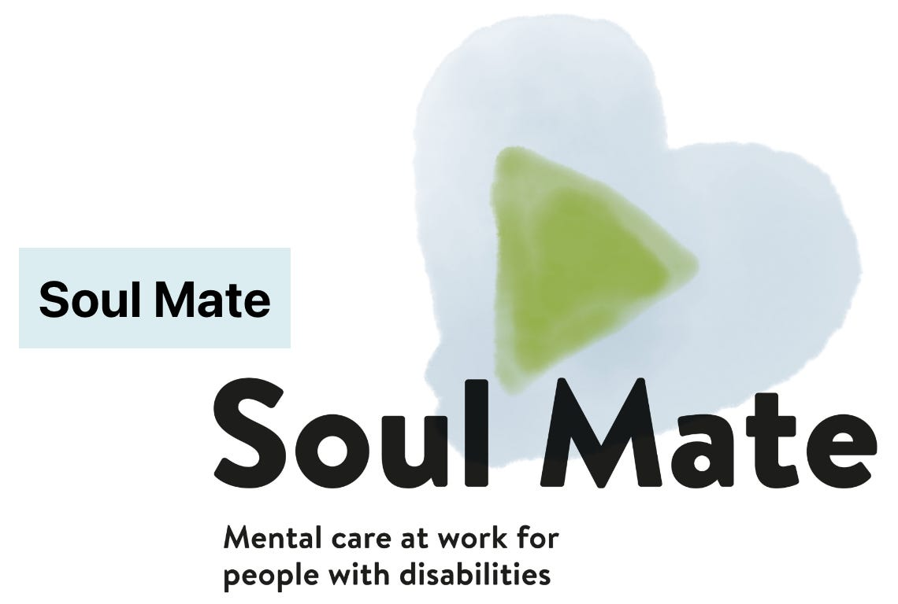
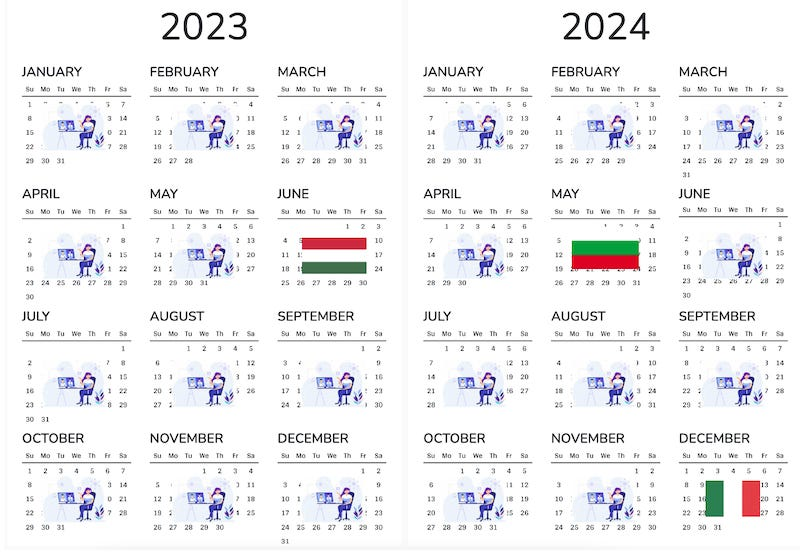
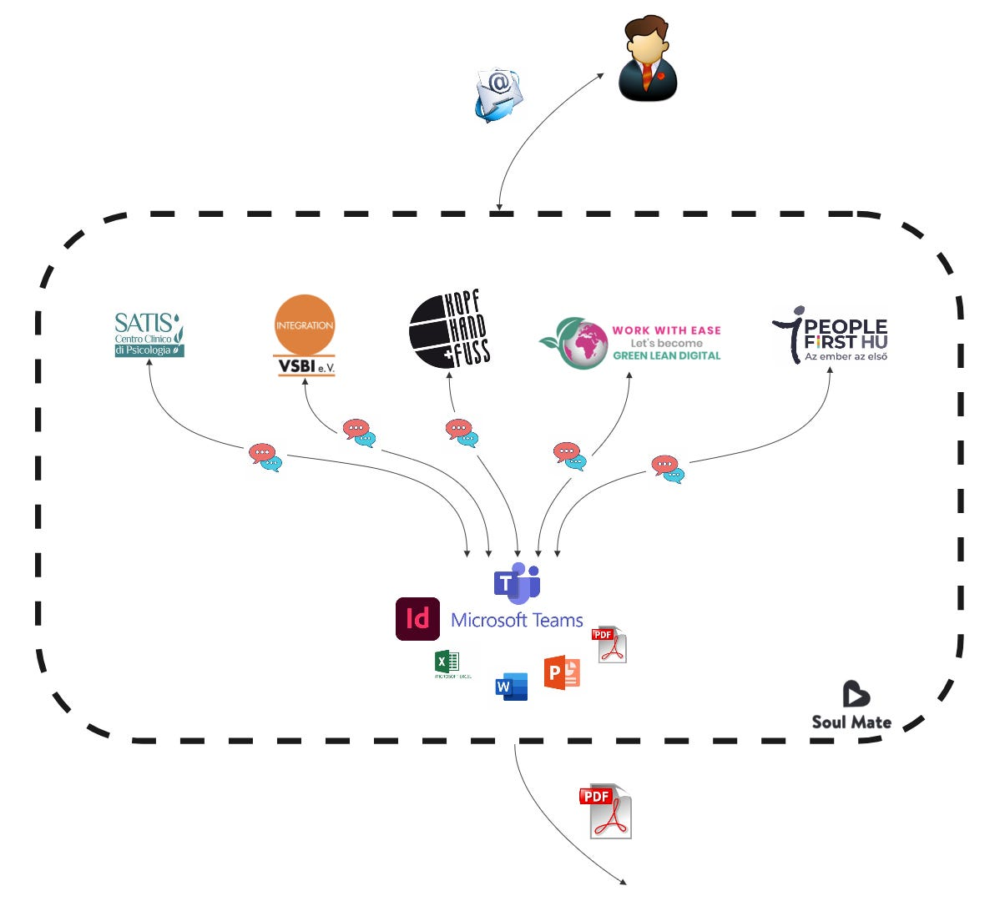
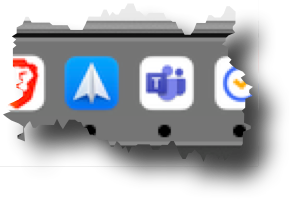
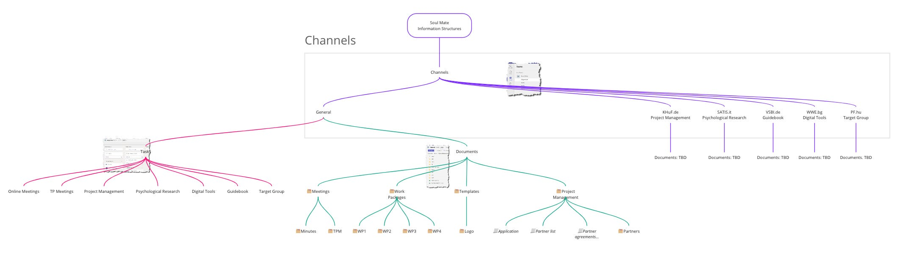
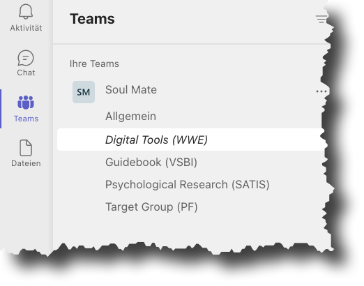
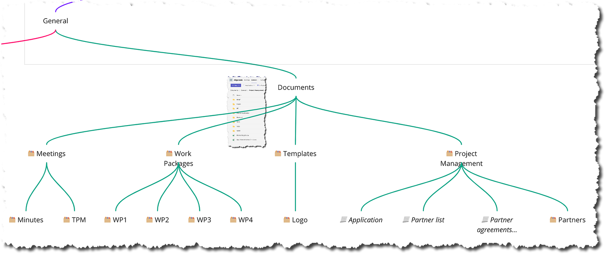
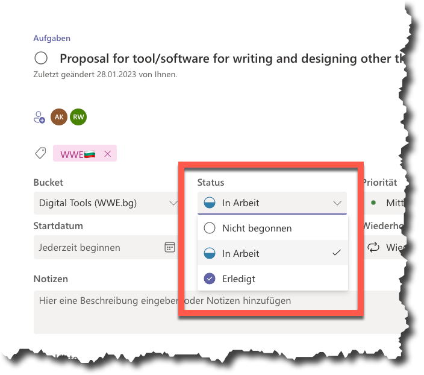
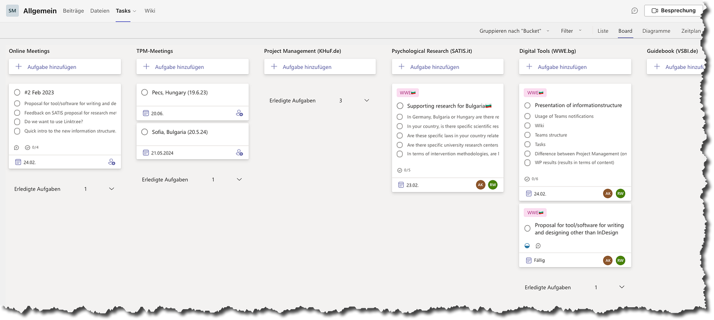
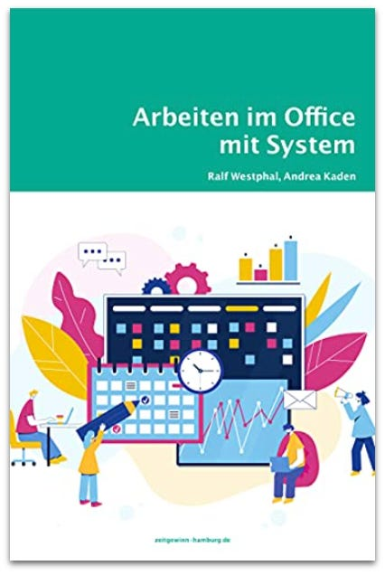

Die Kollaboration in einem internationalen Team organisieren
Selten beginnt die Zusammenarbeit “auf der grünen Wiese”. Meistens ist irgendwer schon da und arbeitet irgendwie zusammen, wenn man selbst dazu kommt oder etwas verändern will. Manchmal jedoch ergibt sich die Möglichkeit, die Zusammenarbeit ohne Altlasten aufzusetzen. Genau das ist uns Ende 2022 aufgetragen worden, als Work With Ease EOOD Partner in einem EU-Projekt geworden ist. Nun gilt es die Kollaboration im Team konkret zu gestalten.

Im Projekt Soul Mate geht es um die psychische Unterstützung am Arbeitsplatz für Menschen mit Behinderungen. Partnerunternehmen aus mehreren EU-Ländern erarbeiten darin ein digitales Trainingsprogramm für Menschen unterschiedlicher gesundheitlicher Ausgangslagen.
Die insgesamt 5 Partnerunternehmen kannten sich nur sehr begrenzt vor Projektstart und hatte auch nur vereinzelt miteinander gearbeitet. Es gab also keine etablierte Organisation der Zusammenarbeit. Einzig vorgegeben war durch die Sache und den EU-Projektantrag ein grober Prozess in Form von Meilensteinen, für die jeweils ein Partnerunternehmen die Verantwortung haben würde:
- SATIS – Centro Clinico di Psicologia, Rom (Italien), ist für die psychologische Recherche, Analyse und Konzepterstellung zuständig
- Work With Ease EOOD, Sofia (Bulgarien), ist für die digitalen Tools zur Umsetzung des Konzepts zuständig.
- People First, Pesc (Ungarn), prüft die Umsetzung auf ihre Tauglichkeit für Menschen mit Behinderungen.
- VSBI, Erfurt, erarbeitet die Projektdokumentation für verschiedene Stakeholder.
Und über alles wacht Kopf, Hand und Fuß, Berlin, als Projektinitiator und -leiter.
Fünf Unternehmen mit insgesamt ca. 12 Projektteammitgliedern müssen sich also auf das Projektziel hin organisieren. Das ist eine Veränderung in den Abläufen aller Beteiligten. Das erfordert Kommunikation unterschiedlicher Art für administrative Zwecke und Ergebnisherstellung. Und das auch noch zwischen grundsätzlich verteilten arbeitenden Teammitgliedern in unterschiedlichen Zeitzonen.
Das Team spürbar machen
Zentral für den Erfolg von Teamwork ist der Zusammenhalt unter den Teammitgliedern. Fühlen die sich wirklich als Team? Ist für sie das Team als größeres Ganze spürbar? Nur wenn das gegeben ist, kann mit einem Einsatz für die anderen und das Ganze gerechnet werden.
Um das zu erreichen, wurde schon im Projektantrag und damit im Projektbudget vorgesehen, dass die Partnerunternehmen sich regelmäßig begegnen: häufiger online, seltener offline.
- Jeden Monat gibt es ein 1-2 stündiges online Meeting. Das soll nicht nur den Teamspirit stärken, sondern auch die Kollaboration im Team fördern. Die Teilnahme mindestens eines Vertreters jedes Partnerunternehmens ist Pflicht. In diesen Meetings wird über Fortschritt berichtet, es werden Fragen geklärt, es werden Entscheidungen getroffen — aber vor allem zeigen alle synchron ihre Präsenz, um das Ganze, das Projekt zu verkörpern. Vertrauen wird durch wiederholte Begegnung aufgebaut. Persönliche Verbindungen können entstehen. Verantwortlichkeit wird mit Gesichtern verknüpft. Kohäsion entwickelt sich.
- Alle 8-10 Monate treffen sich alle Teammitglieder am Standort eines Partnerunternehmens. Während eines intensiven Arbeitstages werden Ergebnisse integriert und Dinge erarbeitet, für die mehr Präsenz hilfreich ist. Darüber hinaus gibt es Gelegenheit zum Socializing.

Die Begegnung der Teammitglieder geben dem Projekt durch den Rhythmus Energie. Das mag sich etwas starr anfühlen, ist aber angesichts der Unbekanntheit der Teammitglieder miteinander fundamental.
Sollte die Zusammenarbeit “gut flutschen”, kann die Frequenz der online Meetings auch reduziert werden. Für den Start sind monatliche Begegnungen jedoch das Minimum.
Grundlegend für jede Kollaboration auf das Projektziel hin ist also ein grobgranularer Zeitplan bestehend aus 4 Meilensteinen und vielen Reflektionen über den Fortschritt und persönlichen Abstimmungsgelegenheiten. Im Mittel sind es 2 Wochen bis zum nächsten synchronen Gespräch; damit hat jeder die Sicherheit, ein Anliegen mit der Kraft des gesprochenen Wortes allen vorzutragen.
Digitale Kommunikation
Die Teammitglieder sitzen nicht in einem Büro oder auch nur Gebäude zusammen, sondern sind über den Kontinent verteilt. Das ist zunächst einmal eine Hürde für die Kollaboration im Team. Entschärft wird die durch das phasenweise Vorgehen mit je einem hauptverantwortlichen Partner. Der arbeitet vordringlich intern mit seinen Mitgliedern am Phasenergebnis. Wie das organisiert ist, ist keine Sache des EU-Projektes. Es muss nur sichergestellt sein, dass der Partner sein Ergebnis verlässlich an das Projekt liefert.
Dennoch ist zu erwarten und auch erwünscht, dass Partnerunternehmen sich unterstützen. Auch wenn z.B. SATIS für die psychologische Recherche zuständig ist in der ersten Phase, dürfen und sollen die anderen Partner Relevantes aus ihren eigenen Ländern zuliefern. Es gibt also mehr Kommunikation als ein hand-over von Ergebnissen zwischen den Phasen.
Mit welchen Mitteln soll Kommunikation aber stattfinden? Die Partnerunternehmen sind sehr unterschiedlich versiert im Umgang mit digitalen Werkzeugen. E-Mail ist allen vertraut — doch E-Mail ist für echte Kollaboration im Team untauglich. “Project management by email” ist ein Anti-Pattern und führt in chaotische Projekte.
Schnittstellen und interne Kommunikationsplattform
Für die Toolauswahl haben wir zunächst einmal das Team von seiner Umwelt getrennt. Die Kommunikation im Team, in der Innenwelt, kann anders stattfinden als mit der Umwelt.
- Nachrichten sollen zwischen der Umwelt und dem Projektteam nur in Form von E-Mails ausgetauscht werden. Das ist ein Medium, von dem angenommen werden kann, dass alle externen Kommunikationspartner es beherrschen. Das ist der große Vorteil von E-Mail. Dafür können all ihre Nachteile in Kauf genommen werden, wenn es sich um sporadische und/oder wechselnde Kommunikationspartner handelt.
- Dokumente hingegen werden in Form von PDF-Dateien für die Umwelt publiziert. Das Format wird auf allen Betriebssystemen unterstützt.

Intern hingegen soll auf E-Mail als Kommunikationsmedium verzichtet werden. Der Grund: Intern ist die Kommunikation hochfrequent, kleinteilig, informell und kontextbezogen. E-Mail ist dafür zu schwergewichtig.
Für einen internen Nachrichtenaustausch gibt es viele digitale Tools mit unterschiedlichen Stärken und Schwächen. Für das Projekt fiel die Wahl auf Microsoft 365 (M365), weil mehrere Projektpartner damit schon Erfahrung hatten und Lizenzen dafür vorhanden sind. Aus unserer Sicht ist es nicht die beste Lösung, aber eine günstige und gangbare.
Kollaboration im Team in MS Teams strukturieren
Im Zentrum der Kollaboration steht mit M365 ein Team im Tool Microsoft Teams. Wie bei Slack oder Discord findet darin der Austausch in thematischen Kanälen in einem Chat mit “hin und her fliegenden Nachrichten” statt.
Aber Teams bietet noch mehr:
- Es bietet eine gemeinsame Dateiablage, um unabhängig von physischen Festplatten an Dokumenten zu arbeiten.
- Es bietet eine Aufgabenverwaltung in Form einer modernen mehrspaltigen Aufgabentafel (Kanban Board).
- Es bietet ein Wiki als “Wissensspeicher” unabhängig von Dokumenten.
Kanäle, Dateien, Aufgaben und Wiki-Seiten sind jeweils Kontexte, innerhalb derer mit Nachrichten leichtgewichtig kommuniziert werden kann. Diese Nachrichten fließen separat von E-Mails der Außenkommunikation. Auf dem Desktop müssen deshalb zwei Apps präsent sein — aber auch nicht mehr.

Zur digital literacy gehört für uns zwar der flüssige Umgang mit weit mehr Apps im Rahmen einer Zusammenarbeit, je nach dem welche Leistungsfähigkeit angestrebt wird. Für das EU-Projekt sind diese beiden jedoch aus mehreren Gründen good enough. (Dass dazu noch Programme wie Microsoft Word, Excel und Powerpoint für die Dokumentenerstellung kommen, ist selbstverständlich. Deren Kenntnis und Vorhandensein sind vorausgesetzt.)
Die Auswahl der Tools ist allerdings im Grunde der einfachere Teil der digitalen Arbeitsorganisation: Es gibt gewisse Tool-Kategorien, aus denen sind die relevanten zu wählen und für jede eine Produktentscheidung zu treffen.
Microsoft 365 hat sich als eierlegende Wollmichsau positioniert und ist in vielen Unternehmen mehr oder weniger bewusst schon vorhanden und mehr oder weniger im Einsatz. Das bedeutet jedoch nicht, dass damit die beste Produktmischung in den relevanten Tool-Kategorien vorliegt. Wir ziehen eigentlich eine best of breed Auswahl vor, d.h. für jede Kategorie wird das beste Tool gewählt; doch wenn “der Platzhirsch” schon anwesend ist und das Budget ansonsten knapp… dann darf es auch einmal eine one size fits all Lösung sein.
Aber, wie gesagt, die Produktauswahl ist nur der Anfang. Schwieriger und wichtiger ist es, die Produkte zu strukturieren. Sie sollen der Kommunikation so wenig wie möglich im Wege stehen; wer kommunizieren will, soll das schnell und leicht tun können. Stets soll klar sein, wo was getan oder gesagt werden sollte.
Um bei der Strukturierung der Medien innerhalb von Teams nicht den Überblick zu verlieren und mit Ideen herumspielen zu können, haben wir ein online Whiteboard bei Miro mit einer Mind Map angelegt. Am Ende hatte die folgende Form:

Unsere ersten Entscheidungen galten den Kanälen in Team in Teams. Sollten die den Projektphasen oder Partnern entsprechen oder thematisch sein? Gewonnen hat eine Kombination all dieser Aspekte, da Themen Partnern und Phasen zugeordnet sind.

Wir glauben, dass sich jeder Beitrag vor allem einem der Themen unterordnen lässt — und damit gleichzeitig einen Partner betrifft, der in einer Phase hauptverantwortlich ist. Und wo das Thema nicht so klar ist, nimmt der Kanal Allgemein die Nachricht auf.
Dokumente in Teams strukturieren
Dokumente, die Arbeitsergebnisse repräsentieren und für das ganze Team gelten, werden im Kanal Allgemein abgelegt. Die dortige Dateiablage haben wir vorstrukturiert. Insbesondere in Meetings und Work Packages (Phasen) erwarten wir einiges Dokumentenaufkommen. Hier haben wir schnell gemerkt, dass bei der Dokumentenablage viel Absprache notwendig ist. Auch wenn Teams dank SharePoint dahinter viel mehr Möglichkeiten bietet mit den Dokumenten zu arbeiten, erinnert die notwendige Arbeit und Absprachen an das Umgehen mit der Ordner- und Laufwerkstruktur auf einem Fileserver. Und manche Regeln sind auch heute noch sinnvoll.

Wie Partner selbst die Dateiablage für ihre Dokumente während ihrer Phase strukturieren, das überlassen wir ihnen. Dafür können sie die Dateiablage in ihrem thematischen Kanal nutzen. Unsere Überlegungen zur Organisation fokussieren auf die Schnittstellen zwischen den Partnern.
Für die Aufgabenverwaltung im Microsoft-Tool Planner, das in Teams integriert ist, galt es schließlich die Spalten festzulegen. In ihnen werden Aufgaben gesammelt, um einen möglichst guten Überblick zu behalten, wer was bis wann zu tun hat.
Da die Aufgabenkarten selbst einen Status enthalten…

…konnten wir die Spalten inhaltlich ausrichten. Wieder haben wir uns vordringlich für thematische/partnerbezogene Spalten entschieden. Dazu sind noch zwei Spalten für die online und offline Meetings gekommen, in denen wir z.B. Meeting-Protokolle sammeln und Vorbereitungen treffen können.

Mit einem Label auf einer Aufgabe identifiziert sich der Partner, der für sie “den Hut auf hat.” So kann es auch kommen, dass z.B. wir (Label “WWE”) eine Aufgabe in der Spalte für Partner SATIS aus Italien haben: Wir arbeiten mit der Aufgabe seinem Thema zu.
Fazit
Wenn ein Projekt beginnt, sind die Teilnehmer hochmotiviert und wollen loslegen. Damit die Kollaboration im Team jedoch klappt, braucht es vor der inhaltlichen Arbeit eine Abstimmung darüber, wie der Austausch von Nachrichten und Dokumenten zwischen den Teilnehmern organisiert werden sollte.
Typisch sind mindestens die folgenden Kommunikationsdimensionen, für die ein konkretes Tool auszuwählen ist:
- Ergebnisse in Form von Dokumenten
- Aufgaben, die zu erledigen sind
- Entscheidungen, die in Diskussionen gefällt werden
Dazu kommen weitere z.B. für online Meetings, online Whiteboard oder Wissenssammlung.
Teams tun gut daran, Entscheidungen über konkrete Produkte in den für sie relevanten Tool-Kategorien frühzeitig zu treffen. Sie spannen damit einen Rahmen auf, in dem sie dann entspannt arbeiten können. “Ach, das wir kriegen das schon irgendwie hin. Wir haben doch alle E-Mail und können bei Bedarf ein online Meeting machen.” ist keine solide Grundlage für die Kollaboration in einem verteilten Team.
In unserem Fall war das Produkt für Tool-Kategorien schon gesetzt: Microsoft 365 Teams. Das konnten wir akzeptieren; es war good enough. Dennoch mussten wir uns Gedanken machen über die Strukturierung innerhalb des Werkzeugs. Ein bisschen Mühe am Anfang, ohne dabei zu sehr optimieren zu wollen, zahlt sich dabei aus. Eine gute Arbeitsorganisation ist Schmierstoff für die Zusammenarbeit. Es wird genügend Gründe geben, über Inhalte in Diskussionen zu geraten; die Form hingegen sollte keinen Anlass geben.
Das Projekt steht derzeit (Stand Februar 2023) noch am Anfang. Wir werden sehen, ob unsere Vorarbeit ausreichend war. Durch die regelmäßigen Reflexionen haben wir immer die Möglichkeit, Korrekturen mit den anderen Teammitgliedern zu besprechen.
Insofern: Die Tool-Landschaft eines Teams sollte nicht als statisch angesehen werden. Nach anfänglicher größerer Bewegung sollte sie zwar zur Ruhe kommen; doch dass sie einen Punkt erreicht, ab dem sich nichts mehr verändert, ist nicht zu erwarten. Andererseits sind digitale Tools kein Selbstzweck; ihre Auswahl anzupassen oder die Strukturen neu zu formieren, braucht gute Gründe. Wo jedoch heute nur E-Mail, ein Dateiserver und ein Tool für online Meetings im Einsatz ist, gibt es viele Ansatzmöglichkeiten, für Verbesserungen.
Sprechen Sie uns gern jederzeit an. Wir geben Ihnen Impulse für die Optimierung ihrer digitalen Zusammenarbeit im Office.

Dieser Artikel erschien zum ersten Mal in meinem Newsletter bei Substack hier im February 2023. Dort finden Sie auch weitere Artikel und können den Newsletter per E-Mail abonnieren.
Weitere Artikel
Regeln für KI im Office
ChatGPT & Co haben sich schnell in die Herzen und Alltag von vielen Menschen im Berufs- und Privatleben gespielt. Diese neuen Werkzeuge eröffnen uns viele Chancen, nicht nur effizienter zu werden, sondern auch kreativer. Aber …
KI als Copilot für die Assistenz
KI in Form von ChatGPT & Co sind hervorragende neue Werkzeuge im Office-Alltag, um produktiver und ja, auch kreativer, zu werden. Neugier statt Angst ist angezeigt im Umgang mit diesen Werkzeugen, die wie andere Werkzeuge auch …